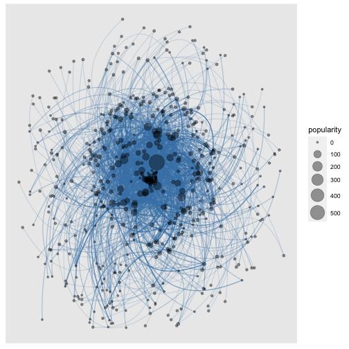

vignettes/tidytags-with-conf-hashtags.Rmd
tidytags-with-conf-hashtags.RmdThis vignette serves as an introduction to how to use many {tidytags} functions through the example of analyzing tweets associated with the 2019 annual convention of the Association for Educational Communications & Technology (AECT): #aect19, #aect2019, or #aect19inspired. The information in this vignette is available scattered throughout the R documentation for the {tidytags} package. This vignette conveniently brings it all together in one place.
A core functionality of {tidytags} is collecting tweets continuously with a Twitter Archiving Google Sheet (TAGS).
For help setting up your own TAGS tracker, see the “Getting started with tidytags” (vignette("setup", package = "tidytags")) vignette, Key Task #1.
Additionally, in order to input data from a TAGS tracker into R, you will need a Google API key for Google Sheets. To quickly get started on obtaining and using a Google API key, see the “Getting started with tidytags” (vignette("setup", package = "tidytags")) vignette, Key Task #2. Or, follow the {gargle} package vignette “How to get your own API credentials” (vignette("get-api-credentials", package = "gargle")) for a thorough guide through this process.
Next, we discuss enriching the data you’ve collected with TAGS with the pull_tweet_data() function.
With a TAGS archive imported into R, {tidytags} allows you to gather quite a bit more information related to the collected tweets with the pull_tweet_data() function. This function uses the {rtweet} package (via rtweet::lookup_tweets()) to query the Twitter API. Using {rtweet} requires Twitter API keys associated with an approved developer account. Fortunately, the {rtweet} vignette, “Obtaining and using access tokens” (vignette("auth", package = "rtweet")), provides a very thorough guide to obtaining Twitter API keys. For further help getting your own Twitter API keys, see the “Getting started with tidytags” vignette (vignette("setup", package = "tidytags")), specifically Pain Point #2.
Note that your dataset will often contain fewer rows after running pull_tweet_data(). This is because rtweet::lookup_tweets() is searching for tweet IDs that are currently available. Any tweets that have been deleted or made “protected” (i.e., private) since TAGS first collected them are dropped from the dataset. Rather than view this as a limitation, we see this as an asset to help ensure our data better reflects the intentions of the accounts whose tweets we have collected (see Fiesler & Proferes, 2018).
Here, we demonstrate two different ways of using pull_tweet_data(). The first method is to query the Twitter API with the tweet ID numbers from the id_str column returned by {rtweet}. However, a limitation of TAGS is that the numbers in this column are often corrupted because Google Sheets considers them very large numbers (instead of character strings) and rounds them by putting them into exponential form. The results of this first method are stored in the variable example_after_rtweet_A below. The second method pulls the tweet ID numbers from the tweet URLs. For example, the tweet with the URL https://twitter.com/tweet__example/status/1176592704647716864 has a tweet ID of 1176592704647716864. The results of this second method are stored in the variable example_after_rtweet_B below.
example_after_rtweet_A <- pull_tweet_data(id_vector = example_df_all$id_str)
example_after_rtweet_B <- pull_tweet_data(url_vector = example_df_all$status_url)When this vignette was run on Nov 19 21, the TAGS tracker had collected 18 variables associated with 2564 tweets. The first method searching with id_str collected 90 variables associated with 2030 tweets. The second method using ‘tidytags::get_char_tweet_ids()’ collected 90 variables associated with 2030 tweets.
Notice how many more variables are in the dataset after using pull_tweet_data(), and how many more tweets are in the dataset when using the second method. We have found that in the process of storing and retrieving tweet IDs, the long string of numbers can sometimes be interpreted as an object of type double (i.e., numeric) and subsequently converted into scientific notation form. This loses the specific identifying use of the string of numerical digits. Therefore, we strongly recommend the second method, obtaining tweet IDs from the tweet URL, which is why we have included get_char_tweet_ids() as an internal function in the {tidytags} package.
The built-in default of pull_tweet_data() is to simply enter the dataframe retrieved from read_tags() and implement the second method, retrieving metadata starting with tweet URLs. That is, pull_tweet_data(read_tags(example_url)). Take a quick look at the result, viewed with the glimpse() function from the {dplyr} package:
example_after_rtweet <- pull_tweet_data(read_tags(tags_url))
dplyr::glimpse(example_after_rtweet)
#> Rows: 2,030
#> Columns: 90
#> $ user_id <chr> "14215524", "14215524", "14215524", "14215524", "14215524", …
#> $ status_id <chr> "1225122317849657345", "1187817883381796864", "1187960612695…
#> $ created_at <dttm> 2020-02-05 18:21:36, 2019-10-25 19:47:06, 2019-10-26 05:14:…
#> $ screen_name <chr> "tadousay", "tadousay", "tadousay", "tadousay", "tadousay", …
#> $ text <chr> "Many thanks to @AECTTechTrends for supporting our @gsa_aect…
#> $ source <chr> "TweetDeck", "TweetDeck", "IFTTT", "Twitter for Android", "I…
#> $ display_text_width <dbl> 268, 284, 89, 95, 137, 75, 103, 270, 280, 62, 188, 136, 132,…
#> $ reply_to_status_id <chr> NA, NA, NA, NA, NA, NA, NA, NA, NA, NA, NA, NA, NA, NA, NA, …
#> $ reply_to_user_id <chr> NA, NA, NA, NA, NA, NA, NA, NA, NA, NA, NA, NA, NA, NA, NA, …
#> $ reply_to_screen_name <chr> NA, NA, NA, NA, NA, NA, NA, NA, NA, NA, NA, NA, NA, NA, NA, …
#> $ is_quote <lgl> FALSE, FALSE, FALSE, FALSE, FALSE, FALSE, FALSE, FALSE, FALS…
#> $ is_retweet <lgl> FALSE, FALSE, FALSE, FALSE, FALSE, FALSE, FALSE, FALSE, FALS…
#> $ favorite_count <int> 8, 1, 3, 0, 3, 10, 32, 14, 12, 2, 7, 0, 0, 12, 15, 7, 0, 0, …
#> $ retweet_count <int> 2, 0, 0, 0, 0, 0, 4, 7, 0, 0, 2, 1, 1, 3, 2, 0, 1, 6, 5, 3, …
#> $ quote_count <int> NA, NA, NA, NA, NA, NA, NA, NA, NA, NA, NA, NA, NA, NA, NA, …
#> $ reply_count <int> NA, NA, NA, NA, NA, NA, NA, NA, NA, NA, NA, NA, NA, NA, NA, …
#> $ hashtags <list> <"uidaho", "UISTEMEdRG", "aect", "aect20", "aect19">, <"UId…
#> $ symbols <list> NA, NA, NA, NA, NA, NA, NA, NA, NA, NA, NA, NA, NA, NA, NA,…
#> $ urls_url <list> "doi.org/10.1007/s11528…", "docs.google.com/forms/d/e/1FAI……
#> $ urls_t.co <list> "https://t.co/8MuP9Mza8f", "https://t.co/2bRw5YYDA9", "http…
#> $ urls_expanded_url <list> "https://doi.org/10.1007/s11528-020-00477-5", "https://docs…
#> $ media_url <list> NA, NA, "http://pbs.twimg.com/media/EHx74b1W4AY11Kb.jpg", "…
#> $ media_t.co <list> NA, NA, "https://t.co/79CGsiSCHD", "https://t.co/aJiDeNQoUp…
#> $ media_expanded_url <list> NA, NA, "https://twitter.com/tadousay/status/11879606126950…
#> $ media_type <list> NA, NA, "photo", "photo", "photo", "photo", "photo", "photo…
#> $ ext_media_url <list> NA, NA, "http://pbs.twimg.com/media/EHx74b1W4AY11Kb.jpg", "…
#> $ ext_media_t.co <list> NA, NA, "https://t.co/79CGsiSCHD", "https://t.co/aJiDeNQoUp…
#> $ ext_media_expanded_url <list> NA, NA, "https://twitter.com/tadousay/status/11879606126950…
#> $ ext_media_type <chr> NA, NA, NA, NA, NA, NA, NA, NA, NA, NA, NA, NA, NA, NA, NA, …
#> $ mentions_user_id <list> <"804807943", "922536306437181440">, "2165058337", NA, NA, …
#> $ mentions_screen_name <list> <"AECTTechTrends", "gsa_aect">, "tedaect", NA, NA, NA, NA, …
#> $ lang <chr> "en", "en", "en", "en", "en", "en", "en", "en", "en", "en", …
#> $ quoted_status_id <chr> NA, NA, NA, NA, NA, NA, NA, NA, NA, NA, NA, NA, NA, NA, NA, …
#> $ quoted_text <chr> NA, NA, NA, NA, NA, NA, NA, NA, NA, NA, NA, NA, NA, NA, NA, …
#> $ quoted_created_at <dttm> NA, NA, NA, NA, NA, NA, NA, NA, NA, NA, NA, NA, NA, NA, NA,…
#> $ quoted_source <chr> NA, NA, NA, NA, NA, NA, NA, NA, NA, NA, NA, NA, NA, NA, NA, …
#> $ quoted_favorite_count <int> NA, NA, NA, NA, NA, NA, NA, NA, NA, NA, NA, NA, NA, NA, NA, …
#> $ quoted_retweet_count <int> NA, NA, NA, NA, NA, NA, NA, NA, NA, NA, NA, NA, NA, NA, NA, …
#> $ quoted_user_id <chr> NA, NA, NA, NA, NA, NA, NA, NA, NA, NA, NA, NA, NA, NA, NA, …
#> $ quoted_screen_name <chr> NA, NA, NA, NA, NA, NA, NA, NA, NA, NA, NA, NA, NA, NA, NA, …
#> $ quoted_name <chr> NA, NA, NA, NA, NA, NA, NA, NA, NA, NA, NA, NA, NA, NA, NA, …
#> $ quoted_followers_count <int> NA, NA, NA, NA, NA, NA, NA, NA, NA, NA, NA, NA, NA, NA, NA, …
#> $ quoted_friends_count <int> NA, NA, NA, NA, NA, NA, NA, NA, NA, NA, NA, NA, NA, NA, NA, …
#> $ quoted_statuses_count <int> NA, NA, NA, NA, NA, NA, NA, NA, NA, NA, NA, NA, NA, NA, NA, …
#> $ quoted_location <chr> NA, NA, NA, NA, NA, NA, NA, NA, NA, NA, NA, NA, NA, NA, NA, …
#> $ quoted_description <chr> NA, NA, NA, NA, NA, NA, NA, NA, NA, NA, NA, NA, NA, NA, NA, …
#> $ quoted_verified <lgl> NA, NA, NA, NA, NA, NA, NA, NA, NA, NA, NA, NA, NA, NA, NA, …
#> $ retweet_status_id <chr> NA, NA, NA, NA, NA, NA, NA, NA, NA, NA, NA, "118777882718075…
#> $ retweet_text <chr> NA, NA, NA, NA, NA, NA, NA, NA, NA, NA, NA, "#AECT19 #aect19…
#> $ retweet_created_at <dttm> NA, NA, NA, NA, NA, NA, NA, NA, NA, NA, NA, 2019-10-25 17:1…
#> $ retweet_source <chr> NA, NA, NA, NA, NA, NA, NA, NA, NA, NA, NA, "TweetDeck", "Tw…
#> $ retweet_favorite_count <int> NA, NA, NA, NA, NA, NA, NA, NA, NA, NA, NA, 5, 6, NA, NA, NA…
#> $ retweet_retweet_count <int> NA, NA, NA, NA, NA, NA, NA, NA, NA, NA, NA, 1, 1, NA, NA, NA…
#> $ retweet_user_id <chr> NA, NA, NA, NA, NA, NA, NA, NA, NA, NA, NA, "11092692", "413…
#> $ retweet_screen_name <chr> NA, NA, NA, NA, NA, NA, NA, NA, NA, NA, NA, "gravesle", "Fak…
#> $ retweet_name <chr> NA, NA, NA, NA, NA, NA, NA, NA, NA, NA, NA, "Dr. Leigh Grave…
#> $ retweet_followers_count <int> NA, NA, NA, NA, NA, NA, NA, NA, NA, NA, NA, 5988, 95, NA, NA…
#> $ retweet_friends_count <int> NA, NA, NA, NA, NA, NA, NA, NA, NA, NA, NA, 6521, 116, NA, N…
#> $ retweet_statuses_count <int> NA, NA, NA, NA, NA, NA, NA, NA, NA, NA, NA, 47343, 251, NA, …
#> $ retweet_location <chr> NA, NA, NA, NA, NA, NA, NA, NA, NA, NA, NA, "Michigan/Galway…
#> $ retweet_description <chr> NA, NA, NA, NA, NA, NA, NA, NA, NA, NA, NA, "I like to share…
#> $ retweet_verified <lgl> NA, NA, NA, NA, NA, NA, NA, NA, NA, NA, NA, FALSE, FALSE, NA…
#> $ place_url <chr> NA, NA, NA, NA, NA, NA, NA, NA, NA, NA, NA, NA, NA, NA, NA, …
#> $ place_name <chr> NA, NA, NA, NA, NA, NA, NA, NA, NA, NA, NA, NA, NA, NA, NA, …
#> $ place_full_name <chr> NA, NA, NA, NA, NA, NA, NA, NA, NA, NA, NA, NA, NA, NA, NA, …
#> $ place_type <chr> NA, NA, NA, NA, NA, NA, NA, NA, NA, NA, NA, NA, NA, NA, NA, …
#> $ country <chr> NA, NA, NA, NA, NA, NA, NA, NA, NA, NA, NA, NA, NA, NA, NA, …
#> $ country_code <chr> NA, NA, NA, NA, NA, NA, NA, NA, NA, NA, NA, NA, NA, NA, NA, …
#> $ geo_coords <list> <NA, NA>, <NA, NA>, <NA, NA>, <NA, NA>, <NA, NA>, <NA, NA>,…
#> $ coords_coords <list> <NA, NA>, <NA, NA>, <NA, NA>, <NA, NA>, <NA, NA>, <NA, NA>,…
#> $ bbox_coords <list> <NA, NA, NA, NA, NA, NA, NA, NA>, <NA, NA, NA, NA, NA, NA, …
#> $ status_url <chr> "https://twitter.com/tadousay/status/1225122317849657345", "…
#> $ name <chr> "Dr. Tonia A. Dousay", "Dr. Tonia A. Dousay", "Dr. Tonia A. …
#> $ location <chr> "Moscow, ID", "Moscow, ID", "Moscow, ID", "Moscow, ID", "Mos…
#> $ description <chr> "❖ @UIdaho Assoc Prof of #LearningSci ⋄ Assoc Dean of #Accre…
#> $ url <chr> "https://t.co/mNe8apZBwK", "https://t.co/mNe8apZBwK", "https…
#> $ protected <lgl> FALSE, FALSE, FALSE, FALSE, FALSE, FALSE, FALSE, FALSE, FALS…
#> $ followers_count <int> 2152, 2152, 2152, 2152, 2152, 2152, 2152, 2152, 2152, 2152, …
#> $ friends_count <int> 1320, 1320, 1320, 1320, 1320, 1320, 1320, 1320, 1320, 1320, …
#> $ listed_count <int> 181, 181, 181, 181, 181, 181, 181, 181, 181, 181, 181, 181, …
#> $ statuses_count <int> 11894, 11894, 11894, 11894, 11894, 11894, 11894, 11894, 1189…
#> $ favourites_count <int> 4232, 4232, 4232, 4232, 4232, 4232, 4232, 4232, 4232, 4232, …
#> $ account_created_at <dttm> 2008-03-25 13:56:07, 2008-03-25 13:56:07, 2008-03-25 13:56:…
#> $ verified <lgl> FALSE, FALSE, FALSE, FALSE, FALSE, FALSE, FALSE, FALSE, FALS…
#> $ profile_url <chr> "https://t.co/mNe8apZBwK", "https://t.co/mNe8apZBwK", "https…
#> $ profile_expanded_url <chr> "http://about.me/tadousay", "http://about.me/tadousay", "htt…
#> $ account_lang <lgl> NA, NA, NA, NA, NA, NA, NA, NA, NA, NA, NA, NA, NA, NA, NA, …
#> $ profile_banner_url <chr> "https://pbs.twimg.com/profile_banners/14215524/1550516097",…
#> $ profile_background_url <chr> "http://abs.twimg.com/images/themes/theme9/bg.gif", "http://…
#> $ profile_image_url <chr> "http://pbs.twimg.com/profile_images/1458504088186884100/6Nd…At this point, the purpose of {tidytags} should be restated. TAGS tweet trackers are easily set up and maintained, and does an excellent job passively collecting tweets over time. For instance, the example TAGS tracker we demo here has collected thousands of tweets related to the AECT 2019 annual convention since September 30, 2019. In contrast, running this query now using rtweet::search_tweets() is limited by Twitter’s API, meaning that an {rtweet} search can only go back in time 6-9 days, and is limited to returning at most 18,000 tweets per query. So, if you are interested in tweets about AECT 2019, today you could get almost no meaningful data using {rtweet} alone.
rtweet_today <-
rtweet::search_tweets("#aect19 OR #aect2019 OR #aect19inspired")You can see that an {rtweet} search for #AECT19 tweets run today returns 0tweets.
In sum, although a TAGS tracker is great for easily collecting tweets over time (breadth), it lacks depth in terms of metadata related to the gathered tweets. Specifically, TAGS returns information on at most 18 variables; in contrast, {rtweet} returns information on up to 90 variables. Thus, our package {tidytags} brings together the breadth of TAGS with the depth of {rtweet}.
The Twitter API only allows the looking up of 90,000 tweet IDs at a time, a rate limit which resets after 15 minutes. Hence rtweet::lookup_tweets() will only return results for the first 90,000 tweet IDs in your dataset. The function tidytags::lookup_many_tweets() will automatically break your dataset into batches of 90,000 tweets, looking up one batch per 15 minutes until finished. Note that lookup_many_tweets() also works for datasets with fewer than 90,000 tweets as well.
Because our AECT 2019 examples includes fewer than 90,000 tweets (and because lookup_many_tweets() involves waiting for 15 minutes between batches), we do not include an example here. However, this function can be used in the same way as pull_tweet_data().
After pull_tweet_data() is used to collect additional information from TAGS tweet IDs (in this case, the example_after_rtweet dataframe), the {tidytags} function process_tweets() can be used to calculate additional attributes and add these to the dataframe as new columns. Specifically, 10 new variables are added: word_count, character_count, mentions_count, hashtags_count_api, hashtags_count_regex, has_hashtags, urls_count_api, urls_count_regex, is_reply, and is_self_reply. This results in 100 variables associated with the collected tweets.
example_processed <- process_tweets(example_after_rtweet)Notice that you now have 100 variables associated 2030 tweets.
At this point, depending on your research questions, you may wish to calculate some descriptive statistics associated with this tweet data. For instance the mean number of characters per tweet:
mean_char <- round(mean(example_processed$character_count), 2)
sd_char <- round(sd(example_processed$character_count), 2)This shows that the mean number of characters per tweet is 180.02 (SD = 75.18).
Or, perhaps, the mean, median, and max number of hashtags per tweet would be useful to know:
mean_hash <- round(mean(example_processed$hashtags_count_regex), 2)
sd_hash <- round(sd(example_processed$hashtags_count_regex), 2)
median_hash <- median(example_processed$hashtags_count_regex)
max_hash <- max(example_processed$hashtags_count_regex)The mean number of hashtags per tweet is 2.16 (SD = 1.52). The median is 2, and the maximum number of hashtags in a tweet is 12.
The {tidytags} function get_url_domain() combines the expand_urls() function from the {longurl} package and the domain() function from the {urltools} package to easily return the domain names of any hyperlinks including in tweets. Note that using longurl::expand_urls() is a necessary step because Twitter automatically shortens any hyperlinks included in tweets.
As an example, get_url_domain() finds that the domain in the shortened URL “http://bit.ly/2SfWO3K” is “aect.org”:
short_url <- "http://bit.ly/2SfWO3K"
get_url_domain(short_url)
#> [1] "aect.org"It may also be of interest to examine which websites get linked to most often in your dataset. get_url_domain() can be combined with a function from base R like table() to calculate frequency counts for domains present in the dataset. This process is useful to get a picture of to where else on the Internet tweeters are directing their readers’ attention.
Keep in mind, however, that this process is a bit slow.
example_urls <- purrr::flatten_chr(example_processed$urls_url)
example_urls <- example_urls[!is.na(example_urls)] # Remove NA values
example_domains <- get_url_domain(example_urls)
domain_table <- tibble::as_tibble(table(example_domains))
domain_table_sorted <- dplyr::arrange(domain_table, desc(n))
head(domain_table_sorted, 20)
#> # A tibble: 20 × 2
#> example_domains n
#> <chr> <int>
#> 1 convention2.allacademic.com 23
#> 2 instagram.com 12
#> 3 youtube.com 9
#> 4 drive.google.com 7
#> 5 accounts.google.com 6
#> 6 nodexlgraphgallery.org 6
#> 7 docs.google.com 5
#> 8 flipsnack.com 5
#> 9 litnet.co.za 5
#> 10 app.core-apps.com 4
#> 11 apps.apple.com 4
#> 12 caranorth.com 4
#> 13 linkedin.com 4
#> 14 play.google.com 4
#> 15 springer.com 4
#> 16 bretsw.github.io 3
#> 17 msu.zoom.us 3
#> 18 edtechbooks.org 2
#> 19 twitter.com 2
#> 20 amazon.com 1Unsurprisingly, in this dataset, by far the most common domain (as of September 30, 2020) was “twitter.com”, meaning that AECT 2019 tweeters were linking most often to other Twitter content. Other common domains included “convention2.allacademic.com” (i.e., the host of the conference website, including the schedule and session information) as well as “instagram.com” and “youtube.com”, where tweeters likely shared conference-related content.
This function quickly subsets the data, returning just the tweets of the type indicated (e.g., filter_by_tweet_type(df, "reply") returns only reply tweets). The filter_by_tweet_type() function can also be used to look at how many tweets of each type are present in the dataset.
In the dataset of 2030 tweets, there are 62 replies, 1065 retweets, 92 quote tweets, and 2747 tweets containing mentions.
If your research questions conceptualize your tweet dataset as a conversation or affinity space, it may be useful to retrieve and add additional tweets. Specifically, TAGS collects tweets that contain one or more keywords or text strings. For example, the TAGS tracker we have been working with in this vignette collected tweets containing the keywords: #aect19 OR #aect2019 OR #aect19inspired. This is a reasonable approach, from a researchers’ point of view. However, participants who have been following or contributing to these hashtags would also see additional tweets in these “conversations” because Twitter connects together tweets that reply to other tweets into potentially lengthy reply threads. Tweets in a reply thread are all displayed to a user viewing tweets on Twitter’s platform, but because some tweets in a thread may not contain the hashtag of interest, not all tweets in a user’s experience of a conversation would be collected by TAGS. Additionally, tweets contained in a reply thread but composed before the TAGS tracker was initiated would also be left out of the dataset.
There is a solution to this problem. Because the Twitter API offers a reply_to_status_id column, it is possible to iteratively reconstruct reply threads in an upstream direction, that is, retrieving tweets composed earlier than replies in the dataset. We include the get_upstream_tweets in {tidytags} to streamline this process. We also print output at each iteration to demonstrate how the process is progressing.
example_with_upstream <- get_upstream_tweets(example_processed)The dataset contained 2030 tweets at the start. Running get_upstream_tweets() added 28 new tweets.
Unfortunately, due to limitations in what information is given by the Twitter API, it is not practical to retrieve downstream replies, or those tweets in a reply thread that follow a tweet in the dataset but neglect to include the hashtag or keyword.
Another useful approach to social media research is social network analysis. Getting started with social network analysis is as simple as producing an edgelist, a two-column dataframe listing senders and receivers. An edgelist gives a complete accounting of whom is interacting with whom. In Twitter, this is complicated somewhat by the number of ways a user is able to interact with someone else, namely, through replying, retweeting, quote tweeting, mentioning, and liking tweets. The {tidytags} function create_edgelist() uses filter_by_tweet_type() to create an edgelist that takes into account four of these types of interaction. create_edgelist() returns a dataframe with three columns: two for the sender and receiver Twitter handles, and a third column listing the edge type (i.e., the form of interaction). The default is for create_edgelist() to create an edgelist of all possible interactions, but focusing on one type of interaction is easily accomplished as well (e.g., looking at interactions through replies using create_edgelist(df, "reply")).
Run create_edgelist() after completing get_upstream_tweets() for a complete picture of the interactions.
example_edgelist <- create_edgelist(example_with_upstream)
head(example_edgelist, 20)
#> # A tibble: 20 × 3
#> sender receiver edge_type
#> <chr> <chr> <chr>
#> 1 lbukunAA lbukunAA reply
#> 2 bretsw bretsw reply
#> 3 bretsw FakeBobGagne reply
#> 4 bretsw bretsw reply
#> 5 bretsw eromerohall reply
#> 6 bretsw bretsw reply
#> 7 AECT jmenglund03 reply
#> 8 correia65 AnnaRoseLeach reply
#> 9 caranorth11 FredWBaker reply
#> 10 PaulineMuljana AmyLomellini_ID reply
#> 11 PaulineMuljana soniastic reply
#> 12 PaulineMuljana robmoore3 reply
#> 13 PaulineMuljana WEHSLibrary reply
#> 14 PaulineMuljana tintinluo reply
#> 15 nicolapallitt eromerohall reply
#> 16 nicolapallitt aectclt reply
#> 17 michaelmgrant robmoore3 reply
#> 18 michaelmgrant DKSch reply
#> 19 michaelmgrant nicolapallitt reply
#> 20 michaelmgrant EdTech_UofSC replyWe can then easily visualize the edgelist as a sociogram using the {tidygraph} and {ggraph} packages.
First, create graph object using {tidygraph}:
if (requireNamespace("tidygraph", quietly = TRUE) {
example_graph <-
tidygraph::as_tbl_graph(example_edgelist)
example_graph <-
dplyr::mutate(example_graph,
popularity = tidygraph::centrality_degree(mode = 'in'))
}Then plot using {ggraph}:
if (requireNamespace("ggraph", quietly = TRUE) &
requireNamespace("ggplot2", quietly = TRUE)
) {
ggraph::ggraph(example_graph, layout = 'kk') +
ggraph::geom_edge_arc(alpha = .2,
width = .5,
strength = .5,
edge_colour = 'steelblue'
) +
ggraph::geom_node_point(alpha = .4, ggplot2::aes(size = popularity)) +
ggplot2::scale_size(range = c(1,10))
}
Running create_edgelist() also provides a simple way to re-look at how many tweets of each type are present in the dataset, using the count() function from {dplyr}.
dplyr::count(example_edgelist, edge_type, sort = TRUE)
#> # A tibble: 4 × 2
#> edge_type n
#> <chr> <int>
#> 1 mention 2785
#> 2 retweet 1065
#> 3 quote-tweet 99
#> 4 reply 71Note that create_edgelist() does not yet accept a type = "like" parameter due to limitations of the information provided by the Twitter API.
Finally, {tidytags} also has functionality to add user-level data to an edgelist through the function add_users_data(). These additional features are very useful when taking an inferential approach to social network analysis, such as building influence or selection models.
example_senders_receivers_data <- add_users_data(example_edgelist)
dplyr::glimpse(example_senders_receivers_data)
#> Rows: 4,020
#> Columns: 181
#> $ sender <chr> "lbukunAA", "bretsw", "bretsw", "bretsw", "bretsw",…
#> $ receiver <chr> "lbukunAA", "bretsw", "FakeBobGagne", "bretsw", "er…
#> $ edge_type <chr> "reply", "reply", "reply", "reply", "reply", "reply…
#> $ user_id_sender <chr> "2950104673", "53167706", "53167706", "53167706", "…
#> $ status_id_sender <chr> "1453003605691314182", "1461476051587063811", "1461…
#> $ created_at_sender <dttm> 2021-10-26 14:20:29, 2021-11-18 23:26:58, 2021-11-…
#> $ text_sender <chr> "Join us for the ETC Research Lab's 2021 Speakers S…
#> $ source_sender <chr> "Twitter for Android", "Twitter for iPhone", "Twitt…
#> $ display_text_width_sender <int> NA, NA, NA, NA, NA, NA, NA, NA, NA, NA, NA, NA, NA,…
#> $ reply_to_status_id_sender <chr> NA, NA, NA, NA, NA, NA, NA, "1460640595257573376", …
#> $ reply_to_user_id_sender <chr> NA, NA, NA, NA, NA, NA, NA, "32417534", NA, "335462…
#> $ reply_to_screen_name_sender <chr> NA, NA, NA, NA, NA, NA, NA, "lucysantosgreen", NA, …
#> $ is_quote_sender <lgl> FALSE, FALSE, FALSE, FALSE, FALSE, FALSE, FALSE, FA…
#> $ is_retweet_sender <lgl> TRUE, TRUE, TRUE, TRUE, TRUE, TRUE, TRUE, FALSE, FA…
#> $ favorite_count_sender <int> 0, 0, 0, 0, 0, 0, 0, 0, 33, 1, 1, 1, 1, 1, 0, 0, 0,…
#> $ retweet_count_sender <int> 6, 4, 4, 4, 4, 4, 2, 0, 1, 0, 0, 0, 0, 0, 11, 11, 3…
#> $ quote_count_sender <int> NA, NA, NA, NA, NA, NA, NA, NA, NA, NA, NA, NA, NA,…
#> $ reply_count_sender <int> NA, NA, NA, NA, NA, NA, NA, NA, NA, NA, NA, NA, NA,…
#> $ hashtags_sender <list> NA, NA, NA, NA, NA, NA, NA, NA, NA, NA, NA, NA, NA…
#> $ symbols_sender <list> NA, NA, NA, NA, NA, NA, NA, NA, NA, NA, NA, NA, NA…
#> $ urls_url_sender <list> NA, NA, NA, NA, NA, NA, NA, NA, "twitter.com/i/web…
#> $ urls_t.co_sender <list> NA, NA, NA, NA, NA, NA, NA, NA, "https://t.co/G5Ji…
#> $ urls_expanded_url_sender <list> NA, NA, NA, NA, NA, NA, NA, NA, "https://twitter.c…
#> $ media_url_sender <list> NA, NA, NA, NA, NA, NA, NA, NA, NA, NA, NA, NA, NA…
#> $ media_t.co_sender <list> NA, NA, NA, NA, NA, NA, NA, NA, NA, NA, NA, NA, NA…
#> $ media_expanded_url_sender <list> NA, NA, NA, NA, NA, NA, NA, NA, NA, NA, NA, NA, NA…
#> $ media_type_sender <list> NA, NA, NA, NA, NA, NA, NA, NA, NA, NA, NA, NA, NA…
#> $ ext_media_url_sender <list> NA, NA, NA, NA, NA, NA, NA, NA, NA, NA, NA, NA, NA…
#> $ ext_media_t.co_sender <list> NA, NA, NA, NA, NA, NA, NA, NA, NA, NA, NA, NA, NA…
#> $ ext_media_expanded_url_sender <list> NA, NA, NA, NA, NA, NA, NA, NA, NA, NA, NA, NA, NA…
#> $ ext_media_type_sender <chr> NA, NA, NA, NA, NA, NA, NA, NA, NA, NA, NA, NA, NA,…
#> $ mentions_user_id_sender <list> "1613204671", <"17659421", "1156290361951756288">,…
#> $ mentions_screen_name_sender <list> "okstate_etc", <"fsueducation", "2020FLTOY">, <"fs…
#> $ lang_sender <chr> "en", "en", "en", "en", "en", "en", "en", "en", "en…
#> $ quoted_status_id_sender <chr> NA, NA, NA, NA, NA, NA, NA, NA, NA, NA, NA, NA, NA,…
#> $ quoted_text_sender <chr> NA, NA, NA, NA, NA, NA, NA, NA, NA, NA, NA, NA, NA,…
#> $ quoted_created_at_sender <dttm> NA, NA, NA, NA, NA, NA, NA, NA, NA, NA, NA, NA, NA…
#> $ quoted_source_sender <chr> NA, NA, NA, NA, NA, NA, NA, NA, NA, NA, NA, NA, NA,…
#> $ quoted_favorite_count_sender <int> NA, NA, NA, NA, NA, NA, NA, NA, NA, NA, NA, NA, NA,…
#> $ quoted_retweet_count_sender <int> NA, NA, NA, NA, NA, NA, NA, NA, NA, NA, NA, NA, NA,…
#> $ quoted_user_id_sender <chr> NA, NA, NA, NA, NA, NA, NA, NA, NA, NA, NA, NA, NA,…
#> $ quoted_screen_name_sender <chr> NA, NA, NA, NA, NA, NA, NA, NA, NA, NA, NA, NA, NA,…
#> $ quoted_name_sender <chr> NA, NA, NA, NA, NA, NA, NA, NA, NA, NA, NA, NA, NA,…
#> $ quoted_followers_count_sender <int> NA, NA, NA, NA, NA, NA, NA, NA, NA, NA, NA, NA, NA,…
#> $ quoted_friends_count_sender <int> NA, NA, NA, NA, NA, NA, NA, NA, NA, NA, NA, NA, NA,…
#> $ quoted_statuses_count_sender <int> NA, NA, NA, NA, NA, NA, NA, NA, NA, NA, NA, NA, NA,…
#> $ quoted_location_sender <chr> NA, NA, NA, NA, NA, NA, NA, NA, NA, NA, NA, NA, NA,…
#> $ quoted_description_sender <chr> NA, NA, NA, NA, NA, NA, NA, NA, NA, NA, NA, NA, NA,…
#> $ quoted_verified_sender <lgl> NA, NA, NA, NA, NA, NA, NA, NA, NA, NA, NA, NA, NA,…
#> $ retweet_status_id_sender <chr> "1453003310131294219", "1461432541181849606", "1461…
#> $ retweet_text_sender <chr> "Join us for the ETC Research Lab's 2021 Speakers S…
#> $ retweet_created_at_sender <dttm> 2021-10-26 14:19:19, 2021-11-18 20:34:04, 2021-11-…
#> $ retweet_source_sender <chr> "Twitter Web App", "Sprout Social", "Sprout Social"…
#> $ retweet_favorite_count_sender <int> 3, 18, 18, 18, 18, 18, 9, NA, NA, NA, NA, NA, NA, N…
#> $ retweet_retweet_count_sender <int> 6, 4, 4, 4, 4, 4, 2, NA, NA, NA, NA, NA, NA, NA, 11…
#> $ retweet_user_id_sender <chr> NA, NA, NA, NA, NA, NA, NA, NA, NA, NA, NA, NA, NA,…
#> $ retweet_screen_name_sender <chr> NA, NA, NA, NA, NA, NA, NA, NA, NA, NA, NA, NA, NA,…
#> $ retweet_name_sender <chr> NA, NA, NA, NA, NA, NA, NA, NA, NA, NA, NA, NA, NA,…
#> $ retweet_followers_count_sender <int> NA, NA, NA, NA, NA, NA, NA, NA, NA, NA, NA, NA, NA,…
#> $ retweet_friends_count_sender <int> NA, NA, NA, NA, NA, NA, NA, NA, NA, NA, NA, NA, NA,…
#> $ retweet_statuses_count_sender <int> NA, NA, NA, NA, NA, NA, NA, NA, NA, NA, NA, NA, NA,…
#> $ retweet_location_sender <chr> NA, NA, NA, NA, NA, NA, NA, NA, NA, NA, NA, NA, NA,…
#> $ retweet_description_sender <chr> NA, NA, NA, NA, NA, NA, NA, NA, NA, NA, NA, NA, NA,…
#> $ retweet_verified_sender <lgl> NA, NA, NA, NA, NA, NA, NA, NA, NA, NA, NA, NA, NA,…
#> $ place_url_sender <chr> NA, NA, NA, NA, NA, NA, NA, NA, NA, NA, NA, NA, NA,…
#> $ place_name_sender <chr> NA, NA, NA, NA, NA, NA, NA, NA, NA, NA, NA, NA, NA,…
#> $ place_full_name_sender <chr> NA, NA, NA, NA, NA, NA, NA, NA, NA, NA, NA, NA, NA,…
#> $ place_type_sender <chr> NA, NA, NA, NA, NA, NA, NA, NA, NA, NA, NA, NA, NA,…
#> $ country_sender <chr> NA, NA, NA, NA, NA, NA, NA, NA, NA, NA, NA, NA, NA,…
#> $ country_code_sender <chr> NA, NA, NA, NA, NA, NA, NA, NA, NA, NA, NA, NA, NA,…
#> $ geo_coords_sender <list> <NA, NA>, <NA, NA>, <NA, NA>, <NA, NA>, <NA, NA>, …
#> $ coords_coords_sender <list> <NA, NA>, <NA, NA>, <NA, NA>, <NA, NA>, <NA, NA>, …
#> $ bbox_coords_sender <list> <NA, NA, NA, NA, NA, NA, NA, NA>, <NA, NA, NA, NA,…
#> $ status_url_sender <chr> "https://twitter.com/NA/status/1453003605691314182"…
#> $ name_sender <chr> "Ayodeji Ibukun", "Dr. Bret Staudt Willet", "Dr. Br…
#> $ location_sender <chr> "Oklahoma, USA", "Tallahassee, FL", "Tallahassee, F…
#> $ description_sender <chr> "B.Engrg MS MNSE", "(he/him) Assistant Professor @I…
#> $ url_sender <chr> "https://t.co/kVfuPQQfYs", "https://t.co/9lV9hWdb9F…
#> $ protected_sender <lgl> FALSE, FALSE, FALSE, FALSE, FALSE, FALSE, FALSE, FA…
#> $ followers_count_sender <int> 45, 2100, 2100, 2100, 2100, 2100, 4398, 2796, 7926,…
#> $ friends_count_sender <int> 475, 2678, 2678, 2678, 2678, 2678, 555, 2299, 3868,…
#> $ listed_count_sender <int> 0, 55, 55, 55, 55, 55, 125, 26, 200, 5, 5, 5, 5, 5,…
#> $ statuses_count_sender <int> 131, 7007, 7007, 7007, 7007, 7007, 3076, 589, 20509…
#> $ favourites_count_sender <int> 609, 9678, 9678, 9678, 9678, 9678, 3425, 7868, 3570…
#> $ account_created_at_sender <dttm> 2014-12-29 12:06:33, 2009-07-02 19:51:43, 2009-07-…
#> $ verified_sender <lgl> FALSE, FALSE, FALSE, FALSE, FALSE, FALSE, FALSE, FA…
#> $ profile_url_sender <chr> "https://t.co/kVfuPQQfYs", "https://t.co/9lV9hWdb9F…
#> $ profile_expanded_url_sender <chr> "http://www.ayoibukun.com", "http://bretsw.com", "h…
#> $ account_lang_sender <lgl> NA, NA, NA, NA, NA, NA, NA, NA, NA, NA, NA, NA, NA,…
#> $ profile_banner_url_sender <chr> "https://pbs.twimg.com/profile_banners/2950104673/1…
#> $ profile_background_url_sender <chr> "http://abs.twimg.com/images/themes/theme1/bg.png",…
#> $ profile_image_url_sender <chr> "http://pbs.twimg.com/profile_images/10862752062748…
#> $ user_id_receiver <chr> "2950104673", "53167706", "4130346912", "53167706",…
#> $ status_id_receiver <chr> "1453003605691314182", "1461476051587063811", "1187…
#> $ created_at_receiver <dttm> 2021-10-26 14:20:29, 2021-11-18 23:26:58, 2019-10-…
#> $ text_receiver <chr> "Join us for the ETC Research Lab's 2021 Speakers S…
#> $ source_receiver <chr> "Twitter for Android", "Twitter for iPhone", "Twitt…
#> $ display_text_width_receiver <int> NA, NA, NA, NA, NA, NA, NA, NA, NA, NA, NA, NA, NA,…
#> $ reply_to_status_id_receiver <chr> NA, NA, NA, NA, "1461701211699261462", NA, NA, NA, …
#> $ reply_to_user_id_receiver <chr> NA, NA, NA, NA, "918747876", NA, NA, NA, "126059707…
#> $ reply_to_screen_name_receiver <chr> NA, NA, NA, NA, "eromerohall", NA, NA, NA, "The_MoB…
#> $ is_quote_receiver <lgl> FALSE, FALSE, FALSE, FALSE, FALSE, FALSE, FALSE, FA…
#> $ is_retweet_receiver <lgl> TRUE, TRUE, FALSE, TRUE, FALSE, TRUE, TRUE, FALSE, …
#> $ favorite_count_receiver <int> 0, 0, 3, 0, 4, 0, 0, 0, 1, 0, 3, 0, 2, 0, 4, 0, 0, …
#> $ retweet_count_receiver <int> 6, 4, 1, 4, 1, 4, 4, 0, 0, 16, 0, 0, 0, 0, 1, 2, 0,…
#> $ quote_count_receiver <int> NA, NA, NA, NA, NA, NA, NA, NA, NA, NA, NA, NA, NA,…
#> $ reply_count_receiver <int> NA, NA, NA, NA, NA, NA, NA, NA, NA, NA, NA, NA, NA,…
#> $ hashtags_receiver <list> NA, NA, "aect19", NA, NA, NA, NA, <"adultliteracy"…
#> $ symbols_receiver <list> NA, NA, NA, NA, NA, NA, NA, NA, NA, NA, NA, NA, NA…
#> $ urls_url_receiver <list> NA, NA, NA, NA, "twitter.com/i/web/status/1…", NA,…
#> $ urls_t.co_receiver <list> NA, NA, NA, NA, "https://t.co/NBBR2LQ78Z", NA, "ht…
#> $ urls_expanded_url_receiver <list> NA, NA, NA, NA, "https://twitter.com/i/web/status/…
#> $ media_url_receiver <list> NA, NA, "http://pbs.twimg.com/tweet_video_thumb/EH…
#> $ media_t.co_receiver <list> NA, NA, "https://t.co/oOFVcSXkQB", NA, NA, NA, NA,…
#> $ media_expanded_url_receiver <list> NA, NA, "https://twitter.com/FakeBobGagne/status/1…
#> $ media_type_receiver <list> NA, NA, "photo", NA, NA, NA, NA, NA, NA, NA, NA, N…
#> $ ext_media_url_receiver <list> NA, NA, "http://pbs.twimg.com/tweet_video_thumb/EH…
#> $ ext_media_t.co_receiver <list> NA, NA, "https://t.co/oOFVcSXkQB", NA, NA, NA, NA,…
#> $ ext_media_expanded_url_receiver <list> NA, NA, "https://twitter.com/FakeBobGagne/status/1…
#> $ ext_media_type_receiver <chr> NA, NA, NA, NA, NA, NA, NA, NA, NA, NA, NA, NA, NA,…
#> $ mentions_user_id_receiver <list> "1613204671", <"17659421", "1156290361951756288">,…
#> $ mentions_screen_name_receiver <list> "okstate_etc", <"fsueducation", "2020FLTOY">, NA, …
#> $ lang_receiver <chr> "en", "en", "en", "en", "en", "en", "en", "en", "en…
#> $ quoted_status_id_receiver <chr> NA, NA, NA, NA, NA, NA, NA, NA, NA, NA, NA, NA, NA,…
#> $ quoted_text_receiver <chr> NA, NA, NA, NA, NA, NA, NA, NA, NA, NA, NA, NA, NA,…
#> $ quoted_created_at_receiver <dttm> NA, NA, NA, NA, NA, NA, NA, NA, NA, NA, NA, NA, NA…
#> $ quoted_source_receiver <chr> NA, NA, NA, NA, NA, NA, NA, NA, NA, NA, NA, NA, NA,…
#> $ quoted_favorite_count_receiver <int> NA, NA, NA, NA, NA, NA, NA, NA, NA, NA, NA, NA, NA,…
#> $ quoted_retweet_count_receiver <int> NA, NA, NA, NA, NA, NA, NA, NA, NA, NA, NA, NA, NA,…
#> $ quoted_user_id_receiver <chr> NA, NA, NA, NA, NA, NA, NA, NA, NA, NA, NA, NA, NA,…
#> $ quoted_screen_name_receiver <chr> NA, NA, NA, NA, NA, NA, NA, NA, NA, NA, NA, NA, NA,…
#> $ quoted_name_receiver <chr> NA, NA, NA, NA, NA, NA, NA, NA, NA, NA, NA, NA, NA,…
#> $ quoted_followers_count_receiver <int> NA, NA, NA, NA, NA, NA, NA, NA, NA, NA, NA, NA, NA,…
#> $ quoted_friends_count_receiver <int> NA, NA, NA, NA, NA, NA, NA, NA, NA, NA, NA, NA, NA,…
#> $ quoted_statuses_count_receiver <int> NA, NA, NA, NA, NA, NA, NA, NA, NA, NA, NA, NA, NA,…
#> $ quoted_location_receiver <chr> NA, NA, NA, NA, NA, NA, NA, NA, NA, NA, NA, NA, NA,…
#> $ quoted_description_receiver <chr> NA, NA, NA, NA, NA, NA, NA, NA, NA, NA, NA, NA, NA,…
#> $ quoted_verified_receiver <lgl> NA, NA, NA, NA, NA, NA, NA, NA, NA, NA, NA, NA, NA,…
#> $ retweet_status_id_receiver <chr> "1453003310131294219", "1461432541181849606", NA, "…
#> $ retweet_text_receiver <chr> "Join us for the ETC Research Lab's 2021 Speakers S…
#> $ retweet_created_at_receiver <dttm> 2021-10-26 14:19:19, 2021-11-18 20:34:04, NA, 2021…
#> $ retweet_source_receiver <chr> "Twitter Web App", "Sprout Social", NA, "Sprout Soc…
#> $ retweet_favorite_count_receiver <int> 3, 18, NA, 18, NA, 18, 13, NA, NA, 45, NA, NA, NA, …
#> $ retweet_retweet_count_receiver <int> 6, 4, NA, 4, NA, 4, 4, NA, NA, 16, NA, NA, NA, NA, …
#> $ retweet_user_id_receiver <chr> NA, NA, NA, NA, NA, NA, NA, NA, NA, NA, NA, NA, NA,…
#> $ retweet_screen_name_receiver <chr> NA, NA, NA, NA, NA, NA, NA, NA, NA, NA, NA, NA, NA,…
#> $ retweet_name_receiver <chr> NA, NA, NA, NA, NA, NA, NA, NA, NA, NA, NA, NA, NA,…
#> $ retweet_followers_count_receiver <int> NA, NA, NA, NA, NA, NA, NA, NA, NA, NA, NA, NA, NA,…
#> $ retweet_friends_count_receiver <int> NA, NA, NA, NA, NA, NA, NA, NA, NA, NA, NA, NA, NA,…
#> $ retweet_statuses_count_receiver <int> NA, NA, NA, NA, NA, NA, NA, NA, NA, NA, NA, NA, NA,…
#> $ retweet_location_receiver <chr> NA, NA, NA, NA, NA, NA, NA, NA, NA, NA, NA, NA, NA,…
#> $ retweet_description_receiver <chr> NA, NA, NA, NA, NA, NA, NA, NA, NA, NA, NA, NA, NA,…
#> $ retweet_verified_receiver <lgl> NA, NA, NA, NA, NA, NA, NA, NA, NA, NA, NA, NA, NA,…
#> $ place_url_receiver <chr> NA, NA, NA, NA, NA, NA, NA, NA, NA, NA, NA, NA, NA,…
#> $ place_name_receiver <chr> NA, NA, NA, NA, NA, NA, NA, NA, NA, NA, NA, NA, NA,…
#> $ place_full_name_receiver <chr> NA, NA, NA, NA, NA, NA, NA, NA, NA, NA, NA, NA, NA,…
#> $ place_type_receiver <chr> NA, NA, NA, NA, NA, NA, NA, NA, NA, NA, NA, NA, NA,…
#> $ country_receiver <chr> NA, NA, NA, NA, NA, NA, NA, NA, NA, NA, NA, NA, NA,…
#> $ country_code_receiver <chr> NA, NA, NA, NA, NA, NA, NA, NA, NA, NA, NA, NA, NA,…
#> $ geo_coords_receiver <list> <NA, NA>, <NA, NA>, <NA, NA>, <NA, NA>, <NA, NA>, …
#> $ coords_coords_receiver <list> <NA, NA>, <NA, NA>, <NA, NA>, <NA, NA>, <NA, NA>, …
#> $ bbox_coords_receiver <list> <NA, NA, NA, NA, NA, NA, NA, NA>, <NA, NA, NA, NA,…
#> $ status_url_receiver <chr> "https://twitter.com/NA/status/1453003605691314182"…
#> $ name_receiver <chr> "Ayodeji Ibukun", "Dr. Bret Staudt Willet", "FakeBo…
#> $ location_receiver <chr> "Oklahoma, USA", "Tallahassee, FL", "", "Tallahasse…
#> $ description_receiver <chr> "B.Engrg MS MNSE", "(he/him) Assistant Professor @I…
#> $ url_receiver <chr> "https://t.co/kVfuPQQfYs", "https://t.co/9lV9hWdb9F…
#> $ protected_receiver <lgl> FALSE, FALSE, FALSE, FALSE, FALSE, FALSE, FALSE, FA…
#> $ followers_count_receiver <int> 45, 2100, 95, 2100, 1515, 2100, 667, 590, 1393, 559…
#> $ friends_count_receiver <int> 475, 2678, 116, 2678, 1125, 2678, 620, 529, 1482, 9…
#> $ listed_count_receiver <int> 0, 55, 2, 55, 90, 55, 72, 14, 108, 0, 0, 54, 18, 9,…
#> $ statuses_count_receiver <int> 131, 7007, 251, 7007, 341, 7007, 2894, 2688, 18991,…
#> $ favourites_count_receiver <int> 609, 9678, 133, 9678, 7073, 9678, 2053, 1790, 24298…
#> $ account_created_at_receiver <dttm> 2014-12-29 12:06:33, 2009-07-02 19:51:43, 2015-11-…
#> $ verified_receiver <lgl> FALSE, FALSE, FALSE, FALSE, FALSE, FALSE, FALSE, FA…
#> $ profile_url_receiver <chr> "https://t.co/kVfuPQQfYs", "https://t.co/9lV9hWdb9F…
#> $ profile_expanded_url_receiver <chr> "http://www.ayoibukun.com", "http://bretsw.com", NA…
#> $ account_lang_receiver <lgl> NA, NA, NA, NA, NA, NA, NA, NA, NA, NA, NA, NA, NA,…
#> $ profile_banner_url_receiver <chr> "https://pbs.twimg.com/profile_banners/2950104673/1…
#> $ profile_background_url_receiver <chr> "http://abs.twimg.com/images/themes/theme1/bg.png",…
#> $ profile_image_url_receiver <chr> "http://pbs.twimg.com/profile_images/10862752062748…{tidytags} is still a work in progress, so we fully expect that there are still some bugs to work out and functions to document better. If you find an issue, have a question, or think of something that you really wish {tidytags} would do for you, don’t hesitate to email Bret or reach out on Twitter: @bretsw and @jrosenberg6432.
You can also submit an issue on Github.
You may also wish to try some general troubleshooting strategies: